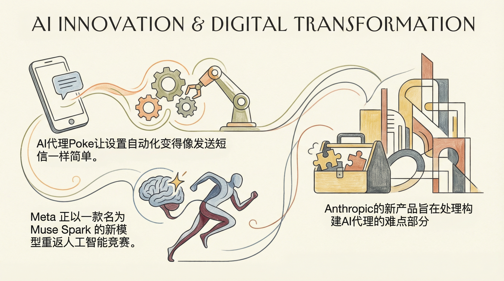

Poke推出AI代理，通过短信简化自动化设置。
两克伴AIGC日报
2026-04-09 星期四

本期关注：Meta发布Muse Spark模型重返AI竞赛，Anthropic推出Claude管理代理降低企业门槛，OpenAI规划企业AI下一阶段及IPO散户预留，AI代理技术推动自动化与行业应用加速。
📰 行业动态
Meta推出新AI模型Muse Spark，重返AI竞赛。
Anthropic推出新产品，降低企业构建AI代理的门槛。
OpenAI概述企业AI的下一阶段，加速行业应用。
OpenAI计划在IPO中预留部分股份给散户投资者。
🔥 今日焦点
Meta近日发布了其首个模型Muse Spark，这是继Llama 4之后近一年来的首次模型发布。Muse Spark目前以托管模式提供，并非开源权重，API目前仅向部分用户开放预览。Meta在meta.ai上展示了该模型，用户可通过Facebook或Instagram登录体验。
Muse Spark在多项基准测试中表现与Opus 4.6、Gemini 3.1 Pro和GPT 5.4相当，但在Terminal-Bench 2.0测试中表现稍逊。Meta表示，他们将继续投资于当前性能差距较大的领域，如长期目标驱动的系统和编码工作流程。
本周，Claude AI公司通过新更新，一举击败了众多代理人工智能初创企业。随着Claude的“神话”地位的确立，他们现在能够迅速且无障碍地推出产品。此次更新推出了Claude管理的代理，允许用户构建长期运行、自主的代理系统，并附带一系列API，使工程团队能够轻松利用Claude的指数级力量，实现可扩展的基础设施。这一更新不仅为AI领域带来了颠覆性的变革，也为工程团队带来了极大的便利。随着代理系统的广泛应用，推理计算市场预计将迎来爆发式增长，预示着AI领域的疯狂时代即将到来。
---
标题：提升学术工作流程：推出两款AI助手优化图表制作与同行评审
本文介绍了两款AI助手，旨在通过生成式AI技术优化学术工作流程，特别是图表制作和同行评审环节。这两款AI助手的核心功能包括自动生成高质量的图表和提供高效的同行评审建议。
📚 深度长文
ALTK-Evolve：AI代理的在职学习
本文探讨了AI代理的在职学习问题，提出了ALTK-Evolve这一创新方法。文章核心观点在于，通过模拟真实工作环境，让AI代理在任务执行过程中不断学习和优化自身性能。
本文探讨了Yash Tekriwal（Clay）如何利用OpenAI代理和Perplexity Computer构建了一个定制的Slack收件箱和看板，有效将每日150条通知精简至约30条可执行任务。文章核心观点在于，通过人工智能技术，用户可以轻松实现工作流程的优化和效率提升。Yash利用OpenAI代理对Slack通知进行智能筛选，结合Perplexity Computer的看板功能，实现了任务的高效管理。这一创新实践为AI从业者和企业提供了宝贵的参考，展示了人工智能在提升工作效率方面的巨大潜力。阅读本文，读者不仅能了解到Yash的具体操作步骤，还能深入思考人工智能在日常工作中的应用场景，为自身工作提供新的思路和方法。
---
在《Using Cheaper Reasoning Models Is Probably Costing You More!》一文中，Dr. Ashish Bamania深入探讨了在生产环境中运行大型语言模型（LLM）时，过度依赖API成本所带来的潜在误区。文章的核心观点是，单纯追求低价的推理模型可能会在长期运营中导致更高的总成本。
作者指出，虽然低价模型在初期可能节省了API调用费用，但它们往往在性能和准确性上存在不足，这可能导致更多的错误和额外的修正成本。关键论据包括：低价模型可能需要更多的计算资源来处理任务，从而增加了电力和硬件成本；此外，由于错误率较高，可能需要更多的用户支持，增加了人力成本。
🛠️ 产品推荐
Show HN：一款基于Go语言的开放源码多智能体驱动器。该产品可协同多个AI智能体，实现团队协作，具备仪表盘、聊天、看板等功能。用户可利用其快速构建SaaS产品，如MyUpMonitor。该驱动器以高效的AI协同能力，助力开发者快速实现复杂应用，提高开发效率。
---
Show HN: Composer – Diagram Your Codebase with MCP是一款连接AI编码代理（如Claude Code、Cursor、Copilot、Windsurf）并生成代码库架构图的工具。通过MCP，用户可轻松描述所需构建的系统，AI架构师将协助设计。Composer 2.0旨在解决复杂代码库的架构可视化难题，提升开发效率，助力技术从业者更高效地管理代码结构和系统设计。
---
Linggen是一款基于Rust开发的本地优先、开源的AI编码代理。其核心功能是提供P2P远程访问，通过WebRTC技术，用户无需端口转发或云中转即可从手机控制代理。新版本0.9.2新增计划模式，代理在编写代码前会提出步骤计划，用户可审批或编辑后再执行。支持多种AI模型，如Ollama、OpenAI兼容API、Gemini、DeepSeek，用户可自行携带密钥或完全运行。Linggen旨在解决开发者远程协作和AI应用难题，提高开发效率和灵活性。